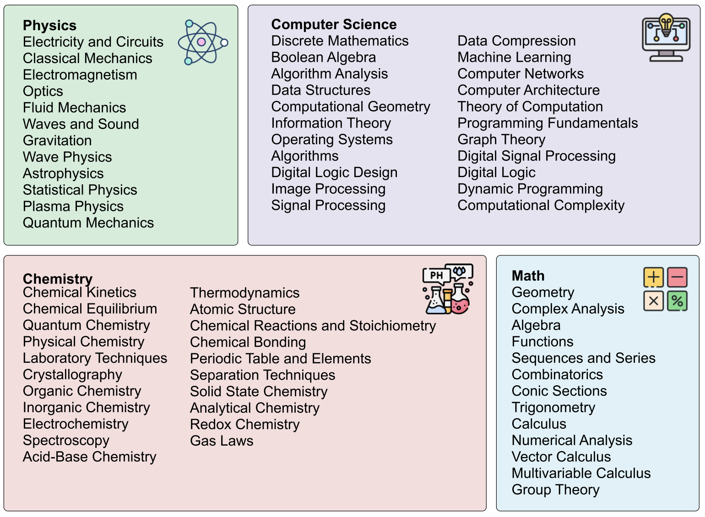

How TheoremExplainAgent works?
We introduce TheoremExplainAgent (TEA): a novel agentic system designed to generate explanatory videos of mathematical and scientific theorems. TEA employs a two-agent architecture: a planner agent that creates coherent story plans and narrations, and a coding agent that generates Python animation scripts with Manim. This allows the system to produce long, coherent, and pedagogically meaningful videos capable of effectively communicating complex concepts across various STEM disciplines, exposing deeper reasoning flaws that text-based evaluations often miss. To evaluate the efficacy of AI-generated explanations, and specifically those produced by TEA, we introduce TheoremExplainBench (TEB): a benchmark suite comprising 240 meticulously selected theorems. TEB assesses explanations on five key dimensions: accuracy, depth, logical flow, visual relevance, and element layout, ensuring a comprehensive evaluation of pedagogical soundness. We believe TEA, coupled with the rigorous evaluation provided by TEB, will drive advancements in AI systems capable of generating truly insightful and educational explanations.

Figure 2: An overview of the multimodal theorem explanation framework.

Figure 3: TheoremExplainAgent consists of two LLM agents. Taking a theorem as input, the planner agent create plans for execution. The coding agent then generates Python scripts to produce visuals and audio.
